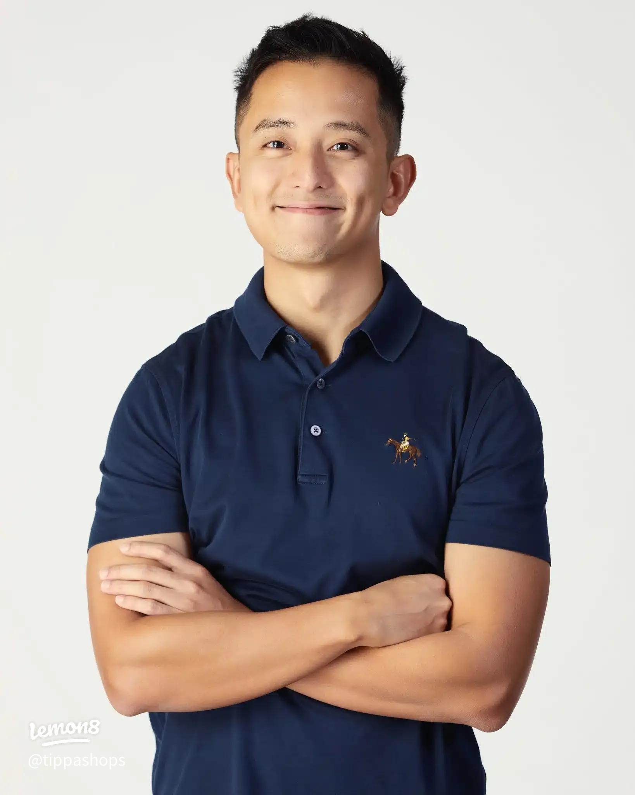
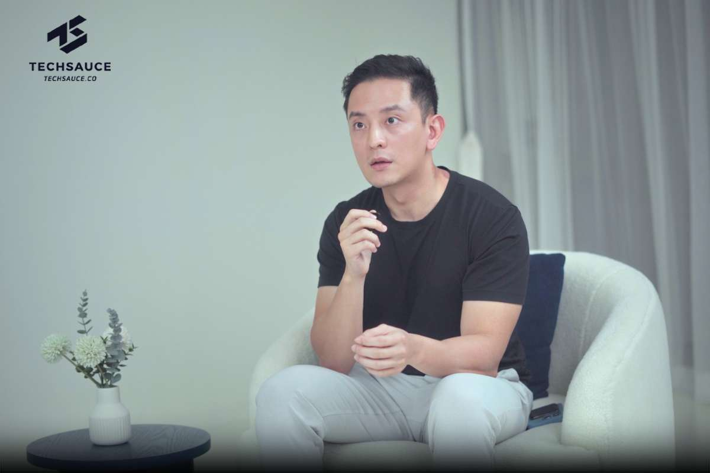
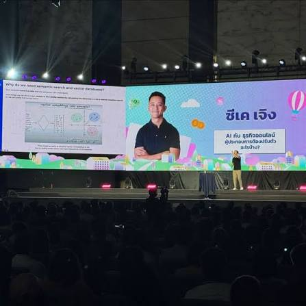
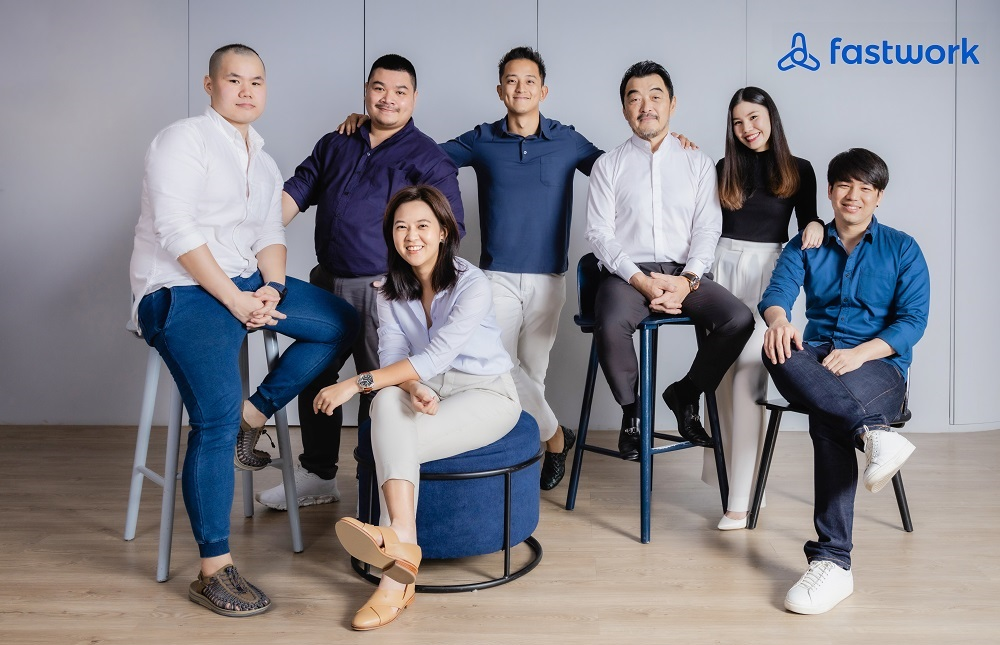
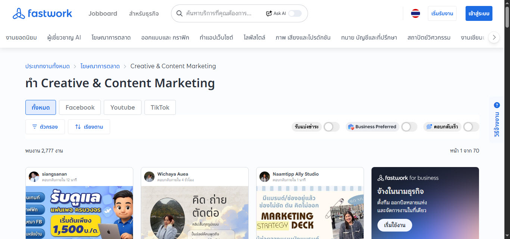
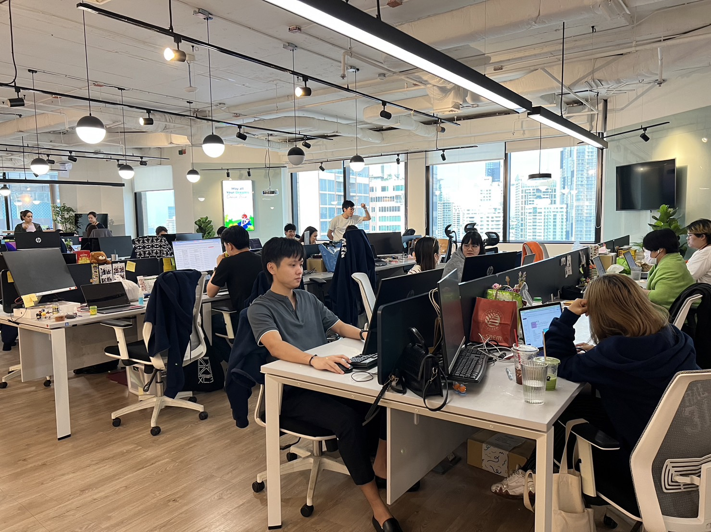
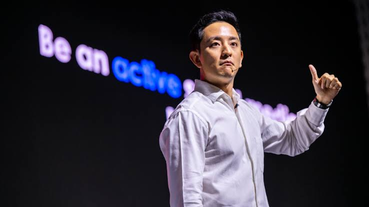

จิกิต "CK" Cheong
ผู้เปลี่ยน Fastwork ให้กลายเป็นแพลตฟอร์มฟรีแลนซ์
ที่ใหญ่ที่สุดในเอเชียตะวันออกเฉียงใต้
"Before I die, I will make Thailand a better place."
images/ck-hero.jpg
ข้อมูลส่วนตัว

Chikit "CK" Cheong
จิกิต "ซีเค" เจิง
CEO & Owner — Fastwork.co| ชื่อเต็ม | Chikit Cheong (จิกิต เจิง) |
|---|---|
| ชื่อเล่น | CK / ซีเค |
| สัญชาติ | ไทย-จีน (Thai-Chinese) |
| สถานที่เกิด | ประเทศไทย (เติบโตที่มาเก๊า) |
| การศึกษา | B.S. Finance & Accounting — Wake Forest University (2016) M.S. Accounting — Wake Forest University |
| วิชาชีพ | CEO, Entrepreneur, CPA, Content Creator |
| ที่ตั้งปัจจุบัน | กรุงเทพมหานคร, ประเทศไทย |
| ประสบการณ์ | Deloitte · Broadgate Financial Group · Fastwork |
| Social Media | @ckfastwork — รวม ~4 ล้าน Followers |
ประวัติชีวิต
วัยเด็ก — เส้นทางที่ไม่ธรรมดา
CK Cheong เกิดในประเทศไทย สืบเชื้อสายไทย-จีน ก่อนจะย้ายไปเติบโตที่มาเก๊า ชีวิตวัยเด็กของเขาเต็มไปด้วยความท้าทาย เมื่ออายุเพียง 13 ปี เขาต้องเผชิญกับการพลัดพรากจากครอบครัวและใช้ชีวิตโดยลำพัง ประสบการณ์อันหนักหน่วงนั้นกลับเป็นแรงผลักดันให้เขาสู้ชีวิตและมุ่งมั่นสร้างอนาคต
"ผมเกิดมาโดยไม่มีบ้าน ไม่มีพ่อแม่ ตั้งแต่อายุ 13 ที่พักพิงของผมคือประเทศไทย"
การศึกษา — อเมริกา & ก้าวแรกในวิชาชีพ
CK มุ่งมั่นศึกษาด้านการเงินและการบัญชี จนสำเร็จการศึกษาระดับ Bachelor of Science (Finance & Accounting) ตามด้วย Master of Science (Accounting) จาก Wake Forest University ในปี 2016 และยังสอบผ่านเป็น Certified Public Accountant (CPA) อีกด้วย
หลังสำเร็จการศึกษา เขาเริ่มต้นอาชีพที่บริษัทบัญชีระดับโลกอย่าง Deloitte ในสหรัฐอเมริกา และยังเคยทำงานที่ Broadgate Financial Group ซึ่งได้รับการยืนยันว่าเป็น "คนที่มีพลังงานและทุ่มเทอย่างสม่ำเสมอ"
Fastwork — ภารกิจเพื่อประเทศไทย
แม้ชีวิตในต่างประเทศจะมั่นคง แต่หัวใจของ CK อยู่ที่ประเทศไทยเสมอ ในปี 2020 เขาตัดสินใจเข้าซื้อกิจการ Fastwork ซึ่งเป็นแพลตฟอร์มฟรีแลนซ์ออนไลน์ ก่อนจะรับตำแหน่ง CEO อย่างเป็นทางการในปี 2021
ภายใต้การนำของเขา Fastwork เติบโตขึ้นอย่างก้าวกระโดด จนกลายเป็นแพลตฟอร์มฟรีแลนซ์ที่ใหญ่ที่สุดในเอเชียตะวันออกเฉียงใต้ ด้วยฟรีแลนซ์กว่า 300,000 คน และลูกค้ากว่า 4 ล้านราย พร้อมขยายตลาดไปยังอินโดนีเซียและเวียดนามแล้ว

images/ck-bio.jpg
เส้นเวลาเหตุการณ์
เกิดในประเทศไทย
Chikit Cheong เกิดในประเทศไทย สืบเชื้อสายไทย-จีน ก่อนย้ายไปเติบโตที่มาเก๊า
จุดเปลี่ยนชีวิต อายุ 13 ปี
ต้องใช้ชีวิตด้วยตัวเองหลังครอบครัวแยกทาง ประสบการณ์นี้ฝังลึกและกลายเป็นแรงขับเคลื่อนชีวิต
สำเร็จการศึกษาจาก Wake Forest University
ได้รับปริญญา B.S. Finance & Accounting และ M.S. Accounting พร้อมใบรับรอง CPA
ทำงานที่ Deloitte สหรัฐอเมริกา
เริ่มต้นอาชีพในบริษัทบัญชีระดับโลก สั่งสมประสบการณ์ด้านการเงินและธุรกิจ
เข้าซื้อกิจการ Fastwork
ตัดสินใจกลับมาประเทศไทยและเข้าซื้อแพลตฟอร์มฟรีแลนซ์ Fastwork.co
รับตำแหน่ง CEO อย่างเป็นทางการ
นำ Fastwork ผ่านวิกฤต COVID-19 และขยายฐานผู้ใช้งานอย่างต่อเนื่อง เริ่มสร้างตัวตนบน TikTok ด้วยคอนเทนต์การเงินและแรงจูงใจ
Fastwork ติด Top Apps ไทย
แพลตฟอร์มเติบโตก้าวกระโดด ขึ้นแท่น #1 App Store หมวด Business ในไทย เอาชนะ TikTok, Zoom, Microsoft, LINE และ Meta
ขยายตลาดสู่อาเซียน
Fastwork ขยายสู่ตลาดอินโดนีเซียและเวียดนาม รองรับประชากรรวมกว่า 380 ล้านคน ราว 6 เท่าของตลาดไทย
Gen.T Leaders of Tomorrow — Tatler Asia
ได้รับการยอมรับในระดับนานาชาติในฐานะผู้นำรุ่นใหม่ของเอเชีย Fastwork ขยายครอบคลุมทุกบริการตั้งแต่ดิจิทัลถึง On-site Services
ผลงาน
Fastwork.co
แพลตฟอร์มจ้างงานฟรีแลนซ์ออนไลน์ที่ใหญ่ที่สุดในเอเชียตะวันออกเฉียงใต้ ครอบคลุมบริการกว่า 1,000 ประเภท ตั้งแต่งานดิจิทัล ออกแบบ ไปจนถึงบริการ On-site อาทิ ช่างไฟฟ้า นวดบำบัด และตกแต่งภายใน
@ckfastwork Content
คอนเทนต์การเงิน การลงทุน และแรงจูงใจสำหรับคนไทย บน TikTok มี Followers กว่า 2.6 ล้านคน รวม Social Media ทุกช่องทาง ~4 ล้าน
TEDxThammasat Talk
บรรยายในหัวข้อ Self-Realization และ Goal Commitment ส่งเสริมแนวคิดการพึ่งพาตนเองและการกล้าที่จะฝัน
Fastwork Indonesia & Vietnam
นำ Fastwork ขยายสู่ตลาดอินโดนีเซียและเวียดนาม ด้วยวิสัยทัศน์ให้ไทยกลายเป็น "ผู้ส่งออกบริการ" ระดับโลก
ความสำเร็จและรางวัล
Gen.T Leaders of Tomorrow
Tatler Asia — ได้รับการยอมรับในฐานะผู้นำแห่งอนาคตของเอเชีย
#1 App Store (Business)
Fastwork ขึ้นแท่น No.1 บน App Store ไทย หมวด Business แซงหน้า TikTok, Zoom, Microsoft, LINE และ Meta
Southeast Asia's Largest Freelancing Platform
Fastwork ได้รับการยืนยันในฐานะแพลตฟอร์มฟรีแลนซ์ที่ใหญ่ที่สุดในอาเซียน
Certified Public Accountant (CPA)
สอบผ่านใบอนุญาตนักบัญชีสาธารณะรับรอง — มาตรฐานสากลระดับสูงสุดในวิชาชีพบัญชี
คำพูดที่น่าสนใจ
Before I die, I will make Thailand a better place.— CK Cheong, คำมั่นสัญญาตลอดชีวิต
"ทักษะอาจเป็นสิ่งรอง เพราะทักษะที่ปราศจากความกล้าหาญนั้นไร้ประโยชน์ สำหรับผม ความกล้าหาญคือสิ่งสำคัญที่สุด"
ว่าด้วยความกล้าหาญ"ถ้าคุณสามารถรับเงินเดือนกรุงเทพฯ และอาศัยอยู่ในชนบทได้ แล้วทำไมถึงไม่ทำ?"
ว่าด้วยการกระจายรายได้"ถ้าจีนรุกรานไทยด้วยสินค้า ผมจะรุกรานโลกด้วยการบริการ ผมจะพาคนไทยไปครองโลก"
ว่าด้วย Soft Power ไทย"ไทยไม่ขาดคนที่มีความสามารถ แต่ขาดคนที่มีความกล้า"
ว่าด้วยวงการสตาร์ทอัพไทยรูปภาพและแกลเลอรี
วางรูปภาพในโฟลเดอร์ images/ ตามชื่อที่ระบุในแต่ละช่อง

ภาพบนเวที / งานสัมมนา

ทีม Fastwork

Social Media Content

Fastwork Office

พิธีรับรางวัล
วิดีโอและสื่อประกอบ
CK Cheong × The Nation — Time to Talk
บทสัมภาษณ์กับ The Nation ว่าด้วยวิสัยทัศน์เพื่อประเทศไทย
@ckfastwork — คอนเทนต์การเงิน
แชร์แนวคิดการเงิน การออม และการลงทุนสู่ Followers กว่า 2.6 ล้านคน
TEDxThammasat — Self-Realization
บรรยายในหัวข้อการตระหนักรู้ในตัวเองและความมุ่งมั่นต่อเป้าหมาย
เรื่องราวที่น่าสนใจ
เด็กไร้บ้านสู่ CEO
อายุเพียง 13 ปี CK ต้องใช้ชีวิตโดยลำพังโดยไม่มีพ่อแม่ แต่ปณิธานและความมุ่งมั่นพาเขาจนสำเร็จการศึกษาจากมหาวิทยาลัยในสหรัฐอเมริกา
แก้ปัญหารถติดด้วย Fastwork
CK เชื่อว่าการกระจายรายได้ออกนอกกรุงเทพฯ ผ่าน Fastwork คือทางออกของปัญหาการจราจรในเมือง ไม่ใช่การสร้างถนนเพิ่ม
แซงแบรนด์ระดับโลก
Fastwork ขึ้นเป็น #1 App Store ไทย หมวด Business แซงหน้าทั้ง TikTok, Zoom, Microsoft, LINE และ Meta
รักไทยแบบไม่มีเงื่อนไข
เมื่อถูกถามถึงแรงบันดาลใจ CK ตอบคำเดียวว่า "ความรัก" ความรักที่มีต่อประเทศไทยโดยไม่มีเงื่อนไขใดๆ
คนไทยทั่วประเทศได้รับประโยชน์
กว่าครึ่งหนึ่งของเงินที่ Fastwork จ่ายทุกสัปดาห์ไปถึงคนนอกกรุงเทพฯ อาทิ ลำพูน ขอนแก่น อุดรธานี สุโขทัย และสงขลา
สุวรรณภูมิคือ "ประตูบ้าน"
ถึงแม้จะเติบโตในต่างประเทศ CK กล่าวว่าทุกครั้งที่กลับถึงสุวรรณภูมิ เขารู้สึกว่าได้กลับถึงบ้านเสมอ
อิทธิพลและผลงานที่ทิ้งไว้
🇹🇭 เปลี่ยนโฉมตลาดแรงงานไทย
Fastwork ภายใต้การนำของ CK ได้พลิกโฉมวิธีที่คนไทยทำงานและจ้างงาน เปิดโอกาสให้ฟรีแลนซ์จากทุกจังหวัดสามารถหารายได้ในระดับเดียวกับคนกรุงเทพฯ โดยไม่ต้องย้ายถิ่นฐาน ซึ่งช่วยลดความเหลื่อมล้ำทางเศรษฐกิจระหว่างเมืองและชนบท
💡 สร้างแรงบันดาลใจให้ผู้ประกอบการรุ่นใหม่
ด้วย Social Media กว่า 4 ล้าน Followers CK ได้แชร์แนวคิดด้านการเงิน การลงทุน และการเป็นผู้ประกอบการ สร้างแรงบันดาลใจให้คนไทยรุ่นใหม่ กล้าคิด กล้าทำ และเชื่อมั่นในศักยภาพของตัวเอง
🌏 ยกระดับ Soft Power ไทยสู่เวทีโลก
วิสัยทัศน์ของเขาที่จะทำให้ประเทศไทยกลายเป็น "ผู้ส่งออกบริการ" ระดับโลก ผ่านการขยาย Fastwork สู่อาเซียนและตลาดนานาชาติ เป็นก้าวสำคัญในการสร้าง Soft Power ด้านบริการและทรัพยากรบุคคลของไทย
แหล่งอ้างอิง
ข้อมูลทั้งหมดในเว็บไซต์นี้รวบรวมจากแหล่งที่เชื่อถือได้ดังต่อไปนี้
"Taking Thailand global: Fastwork's CK Cheong on empowering talent through tech" (2025)
Chikit "CK" Cheong — CEO of Fastwork
Chikit Cheong — Bio, Career & Social Media
Fastwork.co — Chief Executive Officer
Time to Talk EP.7 — CK Cheong, CEO of Fastwork
รูปภาพและสื่อทั้งหมดในเว็บไซต์นี้เป็นของผู้จัดทำหรือได้รับอนุญาตแล้ว ข้อมูลชีวประวัติอ้างอิงจากแหล่งสาธารณะที่ระบุข้างต้น